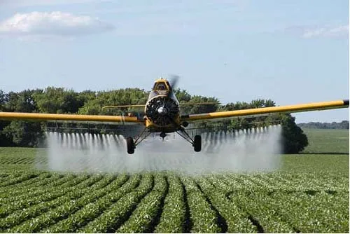

O que é Agricultura de Precisão?
A Agricultura de Precisão (AP) é um avanço tecnológico que visa melhorar a forma que os agricultores cultivam suas terras. Na AP, os agricultores utilizam computadores e drones para descobrir onde colocar fertilizantes ou água em seus campos, assim não gastando o desnecessário. A mesma usa sensores, satélites e drones para mostrar detalhes sobre o solo (onde precisa regar ou aplicar defensivos agrículas), as plantas (a saúde delas) e o clima (se pode chover ou não).

Esta imagem mostra a aplicação precisa e com lucro maior de defensivos agrícolas.
Como Funciona?
Primeiro, os sensores são montados no pasto para calcular a umidade, temperatura e a saúde do plantio. Esses sensores enviam todas as informações para um computador que mapeia o terreno. Com o mapa, os agricultores podem ver quais plantas precisam ser cuidadas.
Os benefícios são grandes. A Agricultura de Precisão estimula os agricultores a produzirem mais alimentos usando menos água e produtos químicos (defensivo agrícola). Isso é bom porque reduz a poluição causada pelos gases tóxicos que a utilização desnecessária de defensivos causa. Além disso, usando esta tecnologia (AP) sai mais barato trabalhar no agronegócio.
A imagem acima mostra a aplicação desnecessária e de alto custo, de defensivos agrícolas.
Retomando
A Agricultura de Precisão está mudando a técnica de cultivar alimentos. Com a tecnologia, os agricultores podem aumentar sua produtividade e poupar recursos e evitando a poluição. É um avanço importante unir a tecnologia e o agro para um futuro mais sustentável.